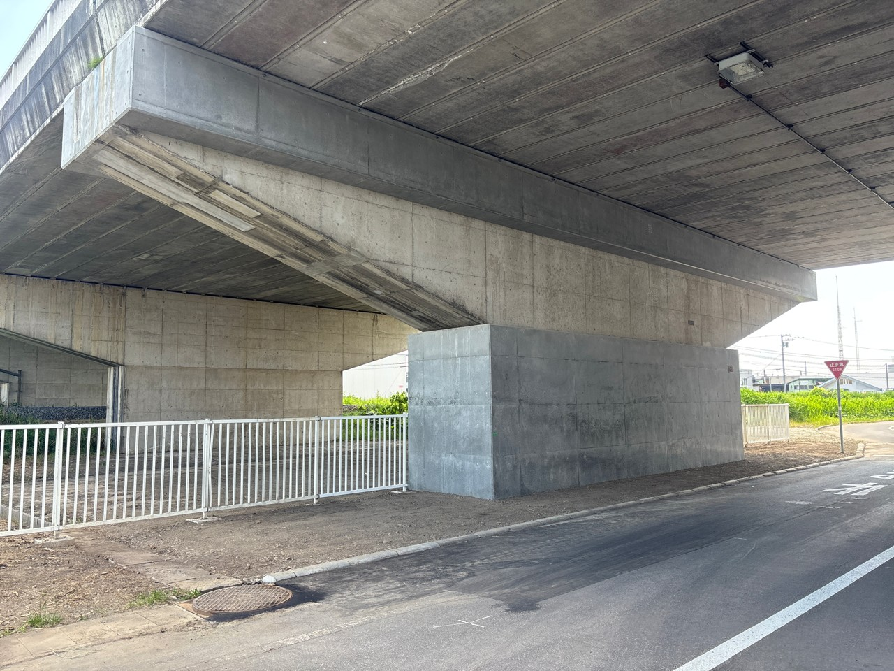
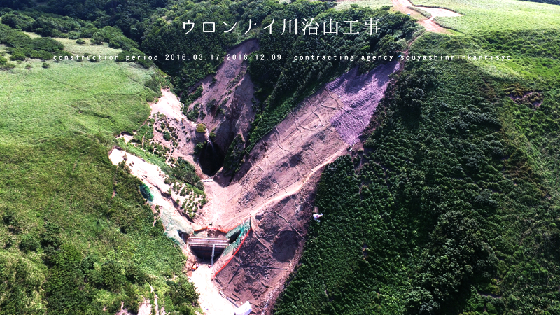
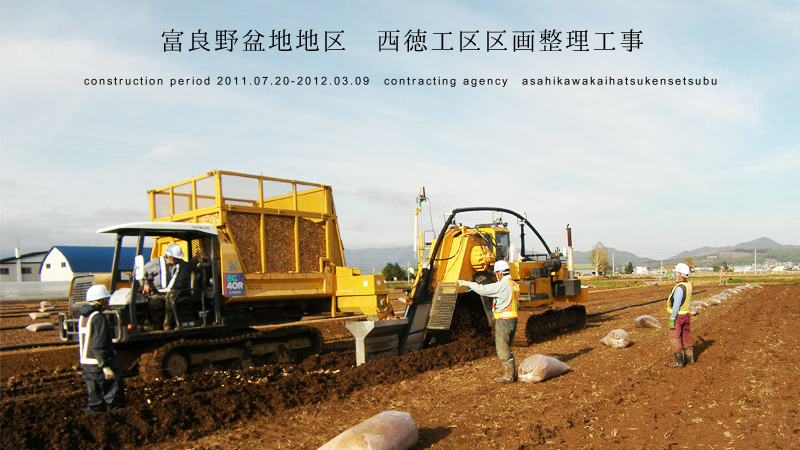
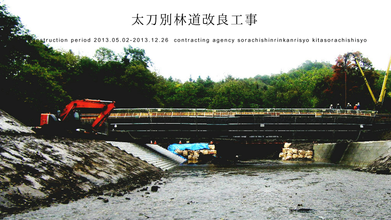
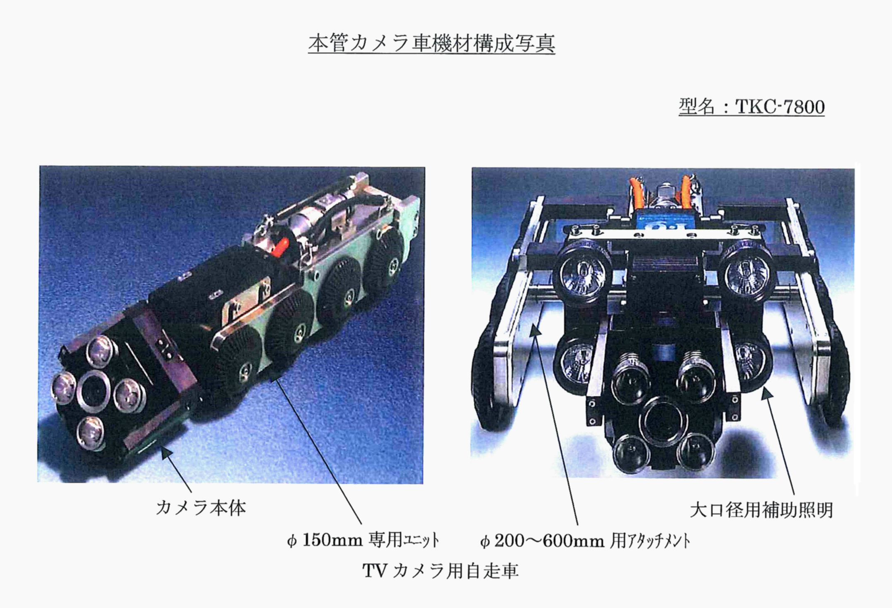
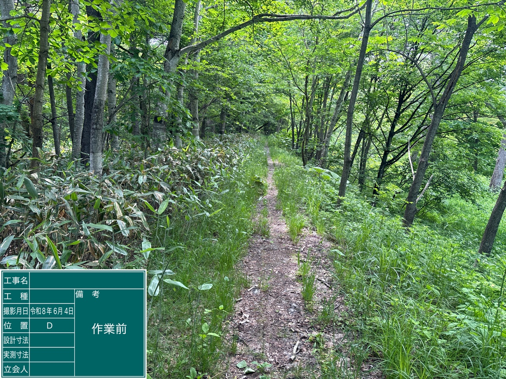
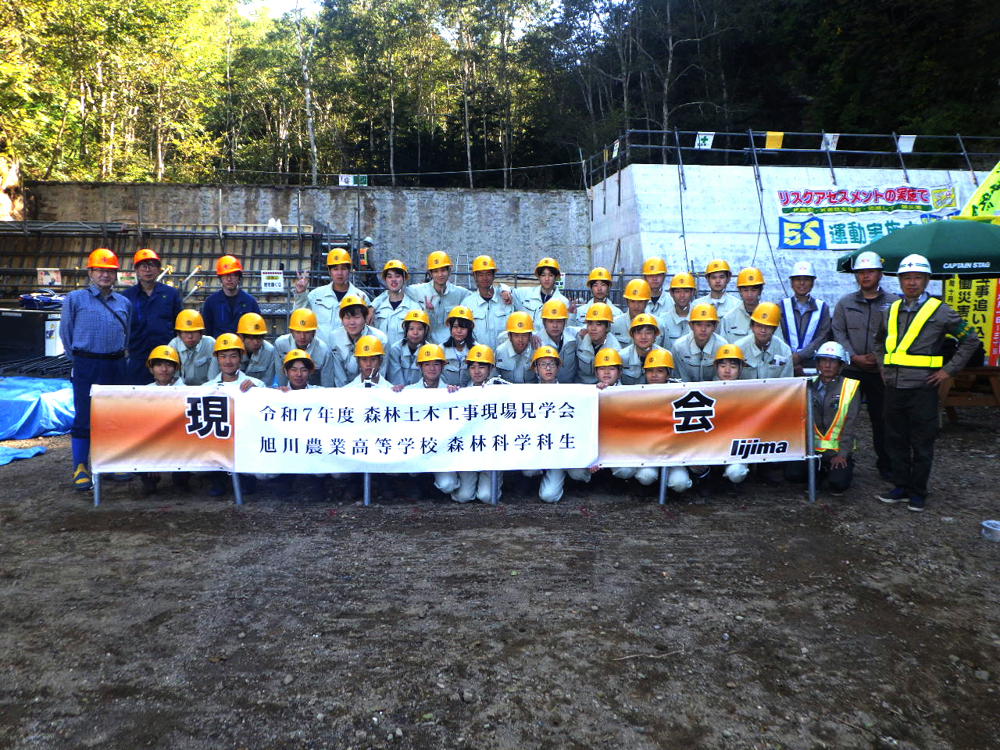

CIVIL ENGINEERING
土木工事
林業土木・農業土木・河川・道路など、人々の生活をより便利に、より安全に。

ABOUT IIJIMA
私たち株式会社飯島組は、昭和22年6月10日に設立し、今年で創業79年を迎えました。
当社は「建設業として地域社会の良質な文化を創造する」という環境方針を策定し、品質規格ISO 9001、環境規格ISO 14001を導入しています。
自然の改変、資源環境の消費、廃棄物の発生等の影響を受け止め、将来に禍根を残さぬよう、環境への負担が少ない企業活動と自然環境の保護に努めています。また、地域住民の生活環境向上のため、ボランティア活動も実施しています。
代表取締役 飯島 弘泰
CIVIL ENGINEERING
林業土木・農業土木・河川・道路など、人々の生活をより便利に、より安全に。
PIPE REHABILITATION
下水道・工業用水道・農業用水道等の失われた機能を再生し、延命します。
COMMUNITY
環境マネジメントと地域に根ざした活動を継続しています。
PROJECTS
令和7年度に元サイトへ掲載されている工事です。公共土木を中心に、橋梁、治山、排水路、河川、道路維持などを手掛けています。



平成19年3月北海道森林管理局より林道工事優良工事表彰
平成19年8月北海道知事より優良工事表彰
平成21年3月北海道森林管理局より治山工事優良工事表彰
平成22年5月旭川市より優良工事表彰
平成25年2月北海道森林管理局より治山工事優良工事表彰
平成26年2月北海道森林管理局より治山工事優良工事表彰
平成27年2月北海道森林管理局より林道工事優良工事表彰
平成27年5月旭川市水道局より優良工事表彰
平成29年2月北海道森林管理局より林道工事優良工事表彰
平成30年2月北海道森林管理局より林道工事優良工事表彰
令和2年2月北海道森林管理局より林道工事優良工事表彰
令和2年12月上川総合振興局旭川建設管理部より優良工事表彰
令和3年12月北海道知事より工事優良表彰
令和4年2月林野庁長官より治山工事優秀工事表彰
令和7年6月旭川市より優良工事表彰

CSR / ENVIRONMENT
2011年12月に環境マネジメントシステム「ISO 14001」を取得。PDCAサイクルを基本に、環境目標を定めて実行しています。

歩道内の草刈り、不法投棄の除去、木材チップの敷設を行いました。今後も森林の再生・発育に貢献します。

旭川農業高等学校森林科学科生33名を迎え、治山工事の意義や仕事の内容を説明しました。
2026.02.20旭川市内の市道で流雪溝投雪ボランティアを実施。2026年で22年目を迎えました。
2025.06.12西部幹線用水路で職員20名が延長4.1kmの草刈り作業を実施しました。
2024.11.13旭川市東鷹栖産の新米400kgを旭川市新旭川保育所へ寄贈しました。
RECRUIT
人々が当たり前に、快適に、安全に生活を送れるよう、私たちは工事を施工しています。只今飯島組では、一緒に技術を磨きあい、躍進していける人材を募集しています。
採用について問い合わせる2級・1級土木施工管理技士など、資格取得に必要な通学費・講習費・受験費を会社が負担します。
写真付き履歴書を本社へ郵送してください。書類選考後、7日以内に電話でご連絡します。
MONTHLY PARKING
空き状況は随時変わります。ご検討の際は、元サイトの最新情報をご確認のうえ、各連絡先へお問い合わせください。
COMPANY
先々代 飯島巳代治により自営にて現在地に発足
建設業法による北海道知事登録を完了
「株式会社 飯島組」設立、資本金600万円
飯島基が代表取締役に就任
資本金を1,000万円へ増資
資本金を2,000万円へ増資
飯島基が取締役会長、飯島弘泰が代表取締役に就任
ISO 9001取得
ISO 14001取得
旭川市より優良工事表彰受賞
CONTACT
この度は、弊社のホームページをご覧いただきありがとうございます。お気軽にお問い合わせください。